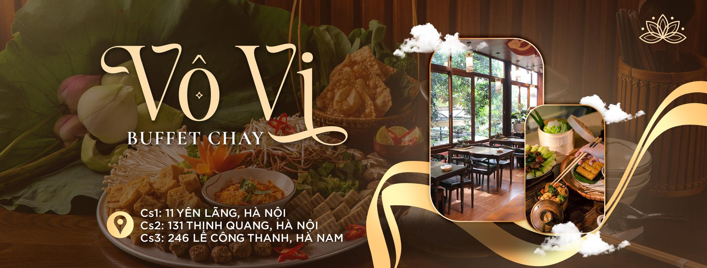

Vì sức khỏe - Vì cộng đồng - Vì hành tinh
Vô vi là nhà hàng chay được thành lập vào năm 2023. Với 3 cơ sở tại thành phố Hà Nội và tỉnh Hà Nam.
Xuất phát từ tình yêu với ẩm thực chay và mong muốn lan tỏa lối sống bền vững, Vô vi là điểm đến lý tưởng cho những ai yêu thích sự thanh đạm, tinh tế nhưng vẫn đậm đà bản sắc ẩm thực Việt Nam.
“Ẩm thực không chỉ là thức ăn, mà còn là một cách để chăm sóc tâm hồn.”
Bên cạnh việc phục vụ món ăn ngon, chúng tôi còn hướng đến việc xây dựng không gian gần gũi, ấm cúng, nơi bạn có thể thư giãn, kết nối và tái tạo năng lượng tích cực trong cuộc sống hiện đại.
Hãy đến và cùng trải nghiệm hành trình ẩm thực xanh tại Vô vi – Nhà hàng chay của tất cả mọi người.